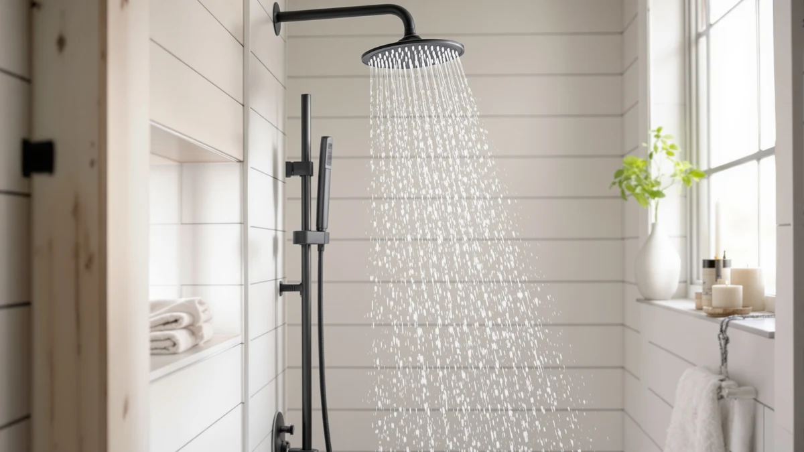

How to Clean Shower Heads with White Vinegar: Complete Guide (2026)
Prices and picks verified as of October 2026. Independent, reader-supported reviews.


Things to Know Before You Buy
- White vinegar's acidity dissolves calcium and lime buildup without damaging most chrome, brass, or stainless finishes, as long as you limit soak time to 30-60 minutes.
- You can clean a fixed shower head in place with a vinegar-filled plastic bag, or remove it for a deeper soak in a bowl.
- Undiluted white vinegar works faster on heavy buildup, but a 50/50 mix with water is gentler on brushed nickel and oil-rubbed bronze finishes.
- Skip overnight soaks on brass, gold-tone, or coated finishes, since extended acid exposure can dull the surface.
- Repeating this cleaning routine every 4-8 weeks in hard water areas keeps pressure consistent and prevents the thick scale that forces a full replacement.
Learning how to clean shower heads with white vinegar is the fastest way to restore full water pressure without replacing a single part. Hard water minerals build up inside the nozzle holes over weeks of regular use, and that crust is what turns a strong, even spray into a weak, uneven trickle. White vinegar dissolves those calcium deposits because its acidity breaks down the mineral bonds, so you don't need a plumber or a specialty cleaner to fix it.
This guide covers removing or bagging the shower head, soaking it in vinegar, scrubbing the nozzles, and rinsing everything clean. You'll need about 45 minutes and a few dollars in supplies you probably already keep under the sink. We'll also flag the mistakes that damage finishes or leave the clog half-solved, so you only have to do this once every few months instead of every few weeks.
What You'll Need
- Supplies: white vinegar, a plastic sandwich bag or small bowl, and rubber bands or a zip tie
- Tools: adjustable pliers or a wrench and an old toothbrush
Step 1: Inspect the shower head and gather your supplies
Start by looking closely at the face of the shower head. White or greenish crust around the nozzle holes, an uneven spray pattern, or water that shoots sideways instead of straight down are the clearest signs of mineral buildup.
Gather distilled white vinegar, a plastic sandwich bag or a small bowl big enough to submerge the shower head, rubber bands or a zip tie, an old toothbrush, and a cloth. Skip apple cider vinegar or cleaning vinegar with added dyes, since they can stain light-colored finishes.
Step 2: Remove the shower head or bag it in place
Turn the shower head counterclockwise by hand first. Most models loosen without tools, but if yours is seized by mineral deposits, wrap a cloth around the connection nut and use adjustable pliers or a wrench for extra grip so you don't scratch the finish.
If you'd rather not remove it, fill a plastic sandwich bag with enough white vinegar to fully submerge the nozzle face, slide the bag up over the shower head, and secure it tightly against the arm with a rubber band or zip tie so none of the vinegar leaks out while it soaks.
Step 3: Soak the shower head in white vinegar
If you removed the shower head, set it nozzle-side down in a bowl and pour in enough white vinegar to cover the holes completely. For light buildup, dilute the vinegar with an equal amount of warm water; for heavy, crusted deposits, use it undiluted for faster results.
Let it sit for 30 minutes on a light-to-moderate clog, or up to an hour on a shower head that hasn't been cleaned in a year or more. If your fixture has a brass, brushed nickel, or oil-rubbed bronze finish, stay closer to 30 minutes, since prolonged acid exposure can dull the coating.
Step 4: Scrub the nozzles and rinse away the residue
After soaking, pull the shower head out of the vinegar and check the nozzle holes again. Most of the mineral buildup should have softened or dissolved on its own. Use an old toothbrush to scrub across the face, and push a toothpick or a straightened paperclip into any holes that are still partially blocked.
Rinse the entire shower head under running water to flush out loosened mineral particles and any lingering vinegar smell. Wipe the finish dry with a soft cloth so mineral spots don't form again as the water evaporates.
Step 5: Reattach the shower head and test the water flow
Wrap the threads in plumber's tape if the original tape is worn, then thread the shower head back onto the arm by hand and give it a final quarter turn with the pliers, enough to stop any drip at the connection.
Turn on the water and run it for a minute. Watch the spray pattern: every nozzle should release an even, steady stream. If a few holes still spray weakly, that section likely needs another round of soaking, which is normal on a shower head that had years of scale built up before its first vinegar treatment.
Common Mistakes to Avoid
The most common mistake is reaching for bleach or a harsh chemical descaler instead of sticking with white vinegar. Bleach doesn't dissolve mineral deposits the way an acid does, and mixing it with other bathroom cleaners can release dangerous fumes in a small, enclosed space. White vinegar handles the job on its own, without that risk.
Soak time matters more than people expect. Leaving a shower head in undiluted vinegar overnight might seem like a shortcut to a deeper clean, but on brass, gold-tone, or oil-rubbed bronze finishes, extended acid exposure strips the protective coating and leaves a dull, blotchy surface that no amount of polishing fixes. Set a timer and stick to the window recommended for your finish.
Skipping the rinse is another frequent error. Vinegar left on the fixture dries into a hazy film and keeps a faint smell in the bathroom for days. Flush the shower head under running water for a full minute and dry it with a cloth before you call the job done.
Finally, don't force a stuck connection nut with excessive pressure. If the shower head won't budge after a few firm turns, soak the connection point itself in vinegar for ten minutes to loosen corrosion before you try again, rather than risk cracking the arm or stripping the threads.
Our Top Picks
Once you know how to clean a shower head with white vinegar, it's worth checking whether your current fixture is even worth the maintenance. These three shower heads consistently show lower mineral buildup and steadier flow in verified owner reviews.

Editor's Pick
Thermostatic Dual Shower Heads System
Owners report that the dual-head design holds consistent pressure even in hard water homes, and the thermostatic valve keeps temperature steady without manual adjustment.
$568.79
Check Price on Amazon
Best Value
AquaCare Polaris 208-mode High Pressure
Reviewers consistently note strong pressure across all 208 spray modes at a fraction of the price of a full shower system, making it an easy upgrade if your current head is past saving.
$59.99
Check Price on Amazon
Premium Choice
16” Thermostatic Rain Shower System
According to verified buyer reviews, the wide 16-inch rain panel delivers even coverage with minimal mineral spotting over time, a detail hard water households tend to flag first.
$499.99
Check Price on AmazonFrequently Asked Questions
In most hard water areas, cleaning your shower head with white vinegar every 4 to 8 weeks keeps pressure steady. Soft water households can usually stretch that to every 3 to 4 months.
Stick with white vinegar. Apple cider vinegar and other colored vinegars contain dyes and sugars that can stain light-colored finishes and leave a sticky residue inside the nozzles.
No. You can seal a vinegar-filled plastic bag around the shower head while it stays attached to the arm, which works well for fixed heads that are hard to unscrew.
Yes, but keep the soak under 30 minutes. Rubber nozzle coatings tolerate short vinegar exposure fine, but extended soaking can make the rubber brittle over time.
It can if you leave it on too long. Limit the soak to 30 minutes on brass, gold-tone, or brushed nickel finishes, and rinse immediately afterward to avoid dulling the coating.
Verdict
Now that you know how to clean shower heads with white vinegar, you have a repeatable fix for low pressure that costs a few dollars and takes less than an hour. Soak the nozzle face in white vinegar, scrub out whatever the acid loosens, rinse thoroughly, and reattach the fixture. Repeat every few weeks in a hard water home and you'll rarely deal with a fully clogged head again.
If your current shower head is already pitted, cracked, or scaled past what vinegar can restore, replacing it is the more practical fix. JetsBath's Thermostatic Dual Shower Heads System holds its pressure well in hard water conditions according to verified owner reviews, and its thermostatic valve means you won't need to readjust the temperature every time someone else uses the shower. Whichever route you take, regular vinegar cleaning paired with a fixture built to resist mineral buildup is what keeps water pressure consistent for years instead of months.